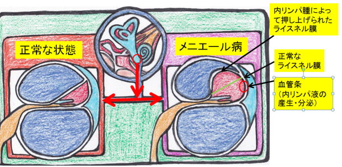

メニエール病の辛いめまいで何年も苦しんでいるかた必見です！その辛いめまいから解放されたくありませんか？で困りの方はTeaching Beauty鍼灸マッサージ整骨院へ。
電話でのご予約・お問い合わせはTEL.03-6413-7803
〒154-0014 東京都世田谷区新町3-21-1さくらウェルガーデン３F
メニエール病Ménière's disease
低音障害型感音難聴、メニエール病、突発性難聴 専門鍼灸院
【メニエール病とは】 
19世紀のフランス医師のメニエールの名前からメニエール病という名前が付いたとされています。メニエールが発見する以前は、「めまい」は脳の病気と考えられていました。
しかし、メニエールによって内耳が原因で「めまい」が起こることが解明された。
実際、脳が原因の「めまい」は少なく、ほとんどの場合は内耳が原因で「めまい」起こるものが多いです。
このメニエール病は、低気圧や台風など気候の変化で、気圧が急に下がった時に『回転性のめまい、耳鳴り、難聴、吐き気、浮遊感などのフワフワとした感じ』が起こる病気で難病の特定機能疾患にも認定されています。
メニエール病は30～50才代の女性にやや多く、近年では60才以上の高齢者の発症も増えてきていて全体の3割を占める。男女比は4：6と女性に多い病気になっています。
しかし、近年は男性の患者が増加傾向にあるとのデータもあります。
芸能界でも、ジャニーズの今井翼さんなどが、メニエール病が原因で活動を休止する程、辛い病気です。耳が聞こえない事以上に、多くの方が「めまい」をどうにかして欲しいと言うほど、「めまい」は辛いものなのです。
また、メニエール病は遺伝要因があると言われていて、5～10％は家族性に発症するとされている。
そのメニエール病は、めまい発作に蝸牛症状（難聴、耳鳴り、耳閉感など）を有する特発性内リンパ水腫である。
メニエール病の「めまい」は、寝ても治まらないなどの症状が10分～数時間続くことがあります。また、ひどい場合は吐き気や冷汗も出る程です。
これらの症状が1回だけでなく繰り返し起こるのがメニエール病の特徴です。
自律神経（交感神経・副交感神経）の大切な働きの一つに、気候の変動に体を対応させる役割があります。気圧が高いと血管にかかる圧力が高くなるため、血液の流れは良くなります。しかし、気圧が低くなると血管にかかる圧力が少なくなるため、血液の流れが緩やかになり血流が低下します。
川の流れが急な場合は綺麗な水になり、沼や池などの流れが悪い所は水がよどんでしまうのと同じです。つまり、気圧が低いと血液の流れが悪くなり浮腫みの原因になってしまうのです。
そのため、急激な気候の変動に自律神経の調節が付いていけなくなると内耳や三半規管にむくみが起こり、メニエール病を発症してしまうのではないかと考えられています。
気圧が発症原因になったという人が、気圧と関係なく発症した人の、2倍も多い事がわかっています。
また、メニエール病は繰り返し症状が起こるので、完治が難しい病の1つとされています。
繰り返し発症する原因として「家庭環境、職場環境、ストレス」が発作の回数に影響する事がハッキリとわかっている。
そのため、常にストレスを溜めないようにし、仕事も頑張り過ぎないで、早く寝る事を心がける必要があります。
【原因】
メニエール病は、めまい、耳鳴り、難聴
の3つの症状がみられる内耳疾患です。
内耳と三半規管の中にある、内リンパが産生過剰、または内リンパ液の吸収阻害、が原因で水ぶくれを起こし、いわゆる水腫と呼ばれる状態になってしまうと言われています。
そのため、メニエール病は「内リンパ水腫」と呼ばれることもあります。
内耳の中にリンパ液が増えてしまう理由は、まだはっきりわかっていません。
しかし、1つの理由として内耳の中のリンパ液が気候などのストレスによって、体内の水分調節を行う視床下部ホルモンに異常をきたし、リンパ液が過剰に増えてしまって、耳の中に水ぶくれを起こした状態と考えられています。
メニエール病の水腫（水ぶくれ）は、内耳にある「球形嚢」と「蝸牛管」という部分に多くみられます。内耳の中には蝸牛、前庭、三半規管があります。
その三半規管の中には、さらに「球形嚢」と「卵形嚢」という感覚装置があります。
「球形嚢」は垂直への平衡感覚を、卵形嚢は水平への平衡感覚をつかさどります。
「球形嚢」の中に平衡班という平衡感覚をつかさどる感覚装置があるために、そこが浮腫んでしまうメニエール病は「めまい」の症状が出てしまうのです。
また、「蝸牛管」はリンパ液で満たされていて、その波動が有毛細胞を動かし、聴力を内耳神経に伝える働きがあります。
そのため、蝸牛管が浮腫んでしまうとメニエール病になり難聴や耳鳴りが発症してしまいます。
近年、「めまい」だけ起こる前庭型メニエール病と、難聴だけ起こる蝸牛型メニエール病（別名：急性低音障害型感音難聴）があることがわかってきました。
つまり、前庭に水腫がパンパンになると「めまい」になり、蝸牛に水腫がパンパンになると難聴を起こすのです。
耳鳴りは有毛細胞がダメージを受けて聞きとりにくい状況のため、何とか脳に聴力を伝えないと、と有毛細胞が頑張って敏感になっているために聴力過敏(有毛細胞が誤作動を起こしてずっと揺れている状態)を起こし普段聞き取れないはずの音を聞き取ってしまっている状態と言われています。
また、耳鳴りの音質でどこがやられているかもわかるのです。
高い音の耳鳴りがするなら、Hz数が高い高音域の部分の有毛細胞がやられています。
低い音の耳鳴りなら、Hz数の低い低音域の部分の有毛細胞がやられる低音性難聴になっていることがわかります。

【そもそも、内耳って？】
上記の図にあるように聴覚器官は、外耳、中耳、内耳の３つの部分に分けられます。
このうち耳の一番奥にあるのが内耳です。
内耳は聴覚、つまり「聞こえ」を担当する蝸牛(かぎゅう)と、平衡感覚、つまり「バランス」をつかさどる前庭器（卵形嚢・球形嚢・三半規管）からできています。
蝸牛から三半規管までは「内リンパ液」という液体に満たされています。
この内リンパ液が増えすぎると水ぶくれの状態になり、蝸牛や前庭器が圧迫されメニエール病になってしまうのです。
①聴覚を感知する蝸牛(かぎゅう)
蝸牛は、書いて字のごとくカタツムリのような形をしています。音を認識するために欠かせない器官です。
蝸牛の内部には蝸牛管という細い管が入っており、蝸牛の断面を見てみると、蝸牛管を挟んで3階建てのような構造になっています。
この2階部分は「内リンパ液」で満たされており、1階と3階部分は「外リンパ液」で満たされています。 外耳から中耳へと伝わった音の振動が、内耳の外リンパ液に伝わると、その振動が蝸牛管内の内リンパ液に伝わり有毛細胞を刺激すると、それが神経を伝わり脳に音が認識されます。
その際、蝸牛管の内リンパ液が水腫を起こしていると、脳で音が正常に認識されず、難聴や耳鳴りが起きてしまいます。
②平衡感覚を感知する前庭器
内耳の働きは「聞くこと」だけではありません。
もう一つの重要な働きに、「体のバランス維持」という機能があります。
自分の体の向きを正しく感知し、フラフラせずまっすぐに立つ時や、グラグラした場所に立っても体が倒れずバランスを崩さないようにする時に、平衡(へいこう)感覚は欠かせません。体のバランスを取るために働いているのが卵形嚢・球形嚢・三半規管という３つの前庭器です。
卵形嚢と球形嚢は直線加速度を感知し、三半規管は回転加速度を感知しています。
この前庭器で内リンパが水ぶくれを起こす(つまり水腫)ことにより圧迫されると「めまい」が起こるようになります。
水ぶくれは、しばらく時間が経つと改善され、めまいや耳鳴りなどは治まります。
でも、またリンパ液が増えると、めまいや耳鳴りなどの症状が再び現れます。
この発作を何度もくり返すと、蝸牛や前庭器の機能が次第に低下し、障害された細胞が元に戻らなくなってしまいます。
メニエール病の症状
 【主な症状】
【主な症状】
メニエール病では三大徴候としてめまい、耳鳴り、難聴の3つの症状が現れます。
①めまい
・めまい発作は「回転性」で、自分または周囲がグルグル回転しているように感じます。
・重症では、吐き気を伴うほどの激しいめまいが起こります。
・軽症では「浮動感」がありフワフワ浮いているように感じます。
・長期間にわたって、めまいを何度も繰りかえします。
・めまいは10分～半日続きます。
・めまいが数秒～数十秒で治まる場合はメニエール病ではない。
・めまいに伴う吐き気から嘔吐する事もあります。
・発症の時間帯は早朝～夕方に多く、夜間は少ない。
・めまいの発作に伴って難聴、耳鳴り、耳閉感などの聴覚症状が変動する。
・めまいに伴って蝸牛症状が出ない場合は前庭型メニエール病
②耳鳴り
・一側性（片耳だけ）に耳鳴りが感じられます。
・「ブーン」というような低い音が聞こえるという患者さんが多いです。
・耳鳴りに耳閉感（耳が詰まった感じ）を伴う事もあります。
③難聴
・初期では「急性低音型感音難聴」という、低い音が聞こえにくい難聴が多いです。
・進行するとだんだん高い音も聞こえにくくなります。
・内耳の障害は2～10年程度で安定し、聴力レベルは50～60ｄBで落ち着く例が多い。
・メニエール病のみで『聾（失聴）』になることは、ほとんどない
・低音の聴力低下が著しい場合は、めまい発作を再発することが多い。
・聴力が回復し1～3ヵ月の間、聴力が低下しなければ再発しにくい。
・自分の話し声が耳に響くような違和感が起こることもあります。
・感音性の難聴がみられます。
④両側に発症
・両側に発症する例は1.6～73％と幅がある。
・疾患の経過年数が増えるほど両側に移行することが多くなる。
・一側性の場合より疾患は長期化し、難聴も高度になり、「めまい」は改善しにくい。
① 伝音性難聴（外耳や中耳が原因）
・中耳炎、耳硬化症、鼓膜穿孔、外耳道狭窄症、耳垢塞栓症など
② 感音性難聴（内耳や聴神経が原因）
・突発性難聴、低音障害型難聴、メニエール病など
【前触れの症状】
メニエール病は早期に発見し早期に治療すれば、発症後２～３年以内には改善することが多い病気です。
逆に、何度かめまい発作を繰り返しているうちに慣れてしまい受診が遅れるケースもあります。
早期発見のためには、前触れを見逃さないことが重要です。
めまい発作を起こす前には、耳鳴り、耳閉感、自分の声が響くなどの聴覚の異常が前触れ症状として現れやすくなっています。
このような初期の症状の段階で、早めに受診することが大切です。
【発症しやすい人】
メニエール病のメカニズムは、まだはっきりわかっていません。
しかし、ストレスが溜まったり、睡眠不足が続いて過労状態になったりしていると、メニエール病を発症しやすくなると言われています。
そのため以下のような人はメニエール病を発症しやすくなります。
・疲れがたまっている人
・睡眠不足の人
・周囲の評価に敏感な人
・自分を抑える性格の人
・我慢することが多い人
・責任感が強い人
・気分の発散が苦手な人
・神経質、几帳面な人
・時間を惜しんで仕事に熱中しやすい人
・緊張が長く続いている人
・ストレスを感じながら生活している人
・体重管理が出来ている人（比較的肥満者の割合は少ない）
・既婚者に多い
・専門技術者に多く、農林漁業や単純作業労働者に少ない。
上記の理由からメニエール病を発症した方は、規則正しい生活をし、十分な睡眠を取り、適度の運動をし、水分を多く摂ることが良いとされています。
【特徴】
難聴は低音がやられる場合が多いが、発作を繰り返しながら進行する。
めまい発作時に難聴が悪化し、発作が治まると共に聴力も回復する場合が多い。
発作時に難聴、耳鳴り、耳閉感などの蝸牛症状がでるのが特徴。
メニエール病非定型例（前庭型）の場合は蝸牛症状を伴わない。
また、音に対する過敏性が高く補充現象（一定の音量以上の音が入ると苦痛を感じる現象）を示すことが多い。
【メニエール病と似た疾患】
メニエール病と間違われやすい病気には、以下のようなものがあります。
・突発性難聴
・聴神経腫瘍
・外リンパ瘻
・急性低音障害型感音難聴
・メニエール病非定例（前庭型）
・遅発性内リンパ水腫
・前庭神経炎
・脳血管障害
・椎骨・脳底動脈循環不全
・頸性めまい
・良性発作性頭位めまい症
【メニエール病の診断手引き】
1.メニエール病確実例
こちらが一般的に知られているメニエール病のこと。
難聴、耳鳴り、耳閉感などの聴覚症状を伴っためまい発作を反復するもの
メニエール病の初回発作時は突発性難聴と鑑別が難しく、鑑別ができない場合が多いので確定診断に時間がかかる。
2.メニエール病非定型例
①メニエール病非定型例（蝸牛型）
以前は蝸牛型メニエール病と呼ばれていた。
難聴、耳鳴り、耳閉感などの聴覚症状が良くなったり、悪くなったりと繰り返し、めまい発作を伴わないもの。
急性低音障害型感音難聴を繰り返した場合はこちらを考える。
②メニエール病非定型例（前庭型）
以前は前庭型メニエール病と呼ばれていた。
メニエール病確実例に類似しためまい発作を繰り返す、聴覚障害を伴わないで、めまいだけを反復する。
極まれに片側、両側に聴覚症状を呈する場合があるが、一度悪くなったらそのままで、良くなったり、悪くなったりと聴覚症状が変化せず一切固定し、「めまい」だけを繰り返す。しかし、基本的には聴覚障害は出ないとされている。
つまり、メニエール病確実例は「めまい」が出ると聴覚症状も悪化する。
前庭型は「めまい」だけを繰り返し、聴覚に障害が出る時は、症状が固定し良くなったり悪くなったりと変化しない。
治療法について
【完治するの？】
はい。完治する例も沢山あります。
まず、発症から2～3年以内に施術を開始する事により多くの方が治ってしまいます。
メニエール病は4年以上の慢性化をたどる例が7割と大変治りにくい病気ですが、症状が出てから早く施術をし、全身の浮腫みを抑える施術をすることにより完治へと向かいます。
また、慢性化している方でも鍼灸施術により寛解へ向かい「めまい」の症状が出なくなっていきます。
慢性化している方、まだ慢性化していない初期の方、鍼灸施術に臨むことにより残りの人生が明るくなりますよ。
【病院での治療法】
まず、耳鼻科やめまい専門外来で早めに診察を受け「めまい、耳鳴り、難聴」の原因を探ることが重要です。
メニエール病の主な検査は、聴力検査と眼振検査です。
聴力検査では、ヘッドホンを付けて色々な音の高さや強さを聞き、耳の聞こえの悪さをチェックし、どの程度悪いかを調べます。
眼振検査では、めまいの時に現れる、眼球の異常な動き（これを眼振と呼びます）があるかどうかを調べます。
病院でメニエール病と診断された場合、西洋医学的な治療では、薬物療法を中心とし、生活習慣を改善していく方法が一般的です。
薬物療法では、内耳の過剰なリンパ液の圧を下げるために利尿剤などが処方されます。
しかし、利尿剤は余分な水分を出して、身体が脱水状態になるため、防御反応として、さらなる浮腫みを発生するとの意見もあるため何とも言えない。
また、自律神経失調症があるので抗不安薬、抗めまい薬も処方されます。
その他にも、神経代謝復活剤、血流改善剤などのお薬も補助的に使われることがあります。
重症の場合には、入院や手術が行なわれる場合があります。
主な手術には、「内リンパ嚢開放術」と「鼓室内薬液注入法」という方法です。
【鍼灸での治療法】
メニエール病はストレスとの因果関係が深いため、鍼灸で自律神経の調整を行い、副交感神経の働きを高めることから始めます。
また、鍼灸では「水毒」、「湿邪」と言って「水はけ」が悪い状態の病名があるため、その水毒や湿邪の施術をすることによって内耳の浮腫みを調節します。
湿邪を改善すると、気圧の変化でめまい症状が出る事が無くなるのです。
「自律神経調節」と「水はけの調整」を行うと、メニエール病で最も辛い「めまい」の症状も落ち着いていき、 メニエール病を寛解へと導くことができます。
特に当院では特別な施術として、内耳の浮腫みを取り除く施術、内耳を温める施術と病院でもできない最新機器によっての施術を受けることができます。
その他にも、過労、ストレス、睡眠不足が引き金になるため、なるべくストレスを溜めないような考え方にすることも重要です。
また、生真面目な性格の人にメニエール病が多いので、あまり頑張り過ぎないようにすることも必要になります。
その他にも、程よい有酸素運動も有効とされているため、当院では運動指導やセルフケアの指導を宿題として自宅で行ってきてもらいます。
症状が落ち着くまでは連続的に鍼灸施術を行い、症状が安定してきたら鍼灸施術を終了し様子をみます、症状が繰り返す方は月1回の鍼灸施術を行い完治へと導きます。
メニエール病だからと言って一生付き合う病気ではありません。鍼灸施術と体質改善を行うことにより完治することもよくある病気なのです。
発症から2年以内に施術を開始すると完治へと向かう方がほとんどです、早めの施術開始をおススメいたします。
発症から何十年も経過している方でも、しっかりと改善されていきますのでご相談ください。メニエール病は治らないと病院で言われますが、しっかりと治る病気ですのでご安心ください。
もう、『めまいに悩まされたくない！」という方は、まずは無料相談にてご相談下さい。
📞 03-6413-7803
セルフケア
前述のように、ストレスが溜まったり、睡眠不足が続いて過労状態になったりしていると、メニエール病を発症しやすくなると言われています。
そのため以下のようなセルフケアによりストレスを軽減し、過労を防ぎ、また運動を習慣づけ、快眠を目指すなどして生活リズムを整えていく事をおススメします。
【メニエール病に効く呼吸法】
ストレスは、メニエール病のきっかけになる事が多く報告されています。
実際、当院にいらっしゃる多くの患者様が、メニエール病の始まった時期にストレスやプレッシャーを感じていたと言っています。
心身ともにストレスがかかると、自律神経の中の交感神経が作動し副交感神経とのバランスが崩れて様々な不調が体に現れます。
よく、自律神経失調症と聞くと思いますが、この状態は交感神経が優位になり、しっかりと副交感神経が働かない状態のことをいいます。
この自律神経が乱れた状態、つまり、副交感神経を優位にさせるためには腹式呼吸が効果的です。
やり方は、簡単なので自宅でも気軽に行えます。
① おヘソの辺りに両手を当て背筋を伸ばし座る
② 3秒かけて鼻から息を吸う（この時に胸とお腹を膨らませるのがポイント）
③ ②の状態のまま、3秒止める
④ 6秒かけて鼻からゆっくり息を吐く（この時お腹を限界まで凹ませる）
⑤ これを1日10回行う
慣れるまではその日の体調に合わせて、無理のない範囲で行いましょう。
これをたった、10日間行うだけで副交感神経優位の体になることができます。
つまり、メニエール病になってしまっている内耳に血液をより多く届けることができるようになるのです。
【寝る前のリラックスする音楽】
寝る前に5分間好きな音楽を聴き、上記の呼吸法を行ってリラックスして眠りにつく。
好きな音楽といっても激しい音楽ではなく気持ちが落ち着く曲を聴いて下さい。
クラシックやヒーリングミュージックなどがおススメです。
【ヨガ】
実はアメリカの病院ではメディカルヨガと言って病院内でヨガを行う施設があるところが非常に多いのです。
ヨガは筋肉のストレッチと腹式呼吸を意識して行う運動で、自律神経のバランスを調節することができます。
ヨガは様々な筋肉のストレッチをする事で交感神経が興奮させます。また、ヨガの最後にシャバーサナ（大の字になって横になるもの）のポーズをとり副交感神経を優位にさせて終了するのがヨガの一連の流れになります。
つまり、ヨガの運動の中には交感神経と副交感神経の両方を調節することができるのです。
当院でおススメしているのは、寝る前に大の字になってゆっくりと息を吸い、その際に胸とお腹を限界まで膨らませ、その後、鼻からゆっくりと吐くを10回行ってもらうだけでも十分と考えます。
だからといって、わざわざ、ヨガの教室に入るのではなく、ご自宅でyoutubeを見ながら続けるだけで十分です。
家だとできない方は教室に入るのもいいと思いますが、自分の意識次第で自宅でも簡単にお金をかけずにできるのがヨガの良いところです。
施術にかかる時間
症状により異なりますが、施術時間は下記を目安として下さい。
初診時 60～90分程度
※初診は問診表の記入や初回検査、しっかり丁寧な問診を行いますので多めにかかります。
2回目以降 60分程度
場合により上記の目安時間より長くかかることもありますので、お時間には余裕を持って
ご予約下さい。
服装
鍼灸施術を行う際は当院で患者着をご用意しております。
そのため、どのような恰好でいらしていただいても問題ありません。
個室治療のため、 着替えのスペースもございます。
施術料金
| １回 | \45,000(税別) |
|---|---|
回数券12回 \540,000（税別）
▼無料相談、ご予約はこちらから▼
📞03-6413-7803
▶突発性難聴についてはこちらへ
▶耳鳴り、耳閉塞感、難聴についてはこちらへ
▶急性低音障害型感音難聴
▶耳管開放症、耳管狭窄症
Ｔｅａｃｈｉｎｇ Ｂｅａｕｔｙ

〒154-0014
東京都世田谷区新町3-21-1
さくらウェルガーデン3F
TEL：
03-6413-7803
→アクセス
診療時間
【通常診療】
月火金土
午前：09:00～13:00
午後：15:00～19:00
木曜日
午前：休診
午後：15:00～19:00
※当日予約可
休診日
水、木(午前)、日、祭日
夜間診療
月火木金土／19:00～21:00
※通常価格の1.5倍料金
※当日の19時までにご予約の場合のみ
※往診の場合も19時までにご予約下さい
早朝診療
月火木金土／07:00～09:00
※通常価格の2倍料金
※前日の19時までにご予約の場合のみ
交通事故・労災・
各種保険取扱い